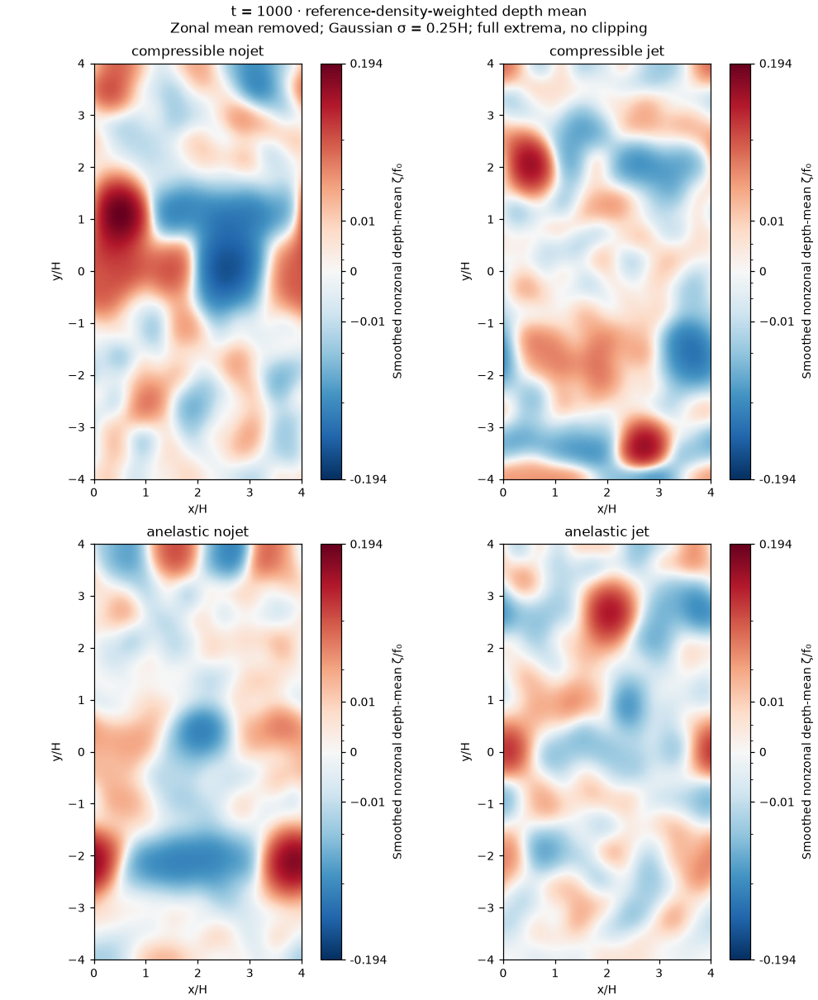

Compressible and anelastic, each with and without the imposed cap-jet target. Every case continued from its own t = 100 checkpoint without resetting the vortices or changing the physics. None of these four simulations is still running. Time is nondimensional, not Earth days.
Top two rows: jet vorticity and tracer. Bottom two: no-jet vorticity and tracer. Three depths across each row.
Download compressible MP4Both movies show every 5 simulation units from 0 through 1000: 201 frames at 8 fps, no temporal interpolation. All 1001 integer-time states per case enter the analysis and fixed vorticity color limits. Three heights: z/H = 0.19375, 0.49375, 0.89375. Late tracer contrast becomes faint on the unchanged absolute-concentration scale as mixing reduces spatial variation.
The initial condition already contained large mixed-sign eddies. The movies and depth-mean fields document their evolution under convection; their appearance alone does not demonstrate spontaneous LSV formation or an inverse energy flux. At t = 1000 the compressible cases retain concentrated cyclonic vortices; the no-jet case also has a broader anticyclonic region.

Same reference-density weighting in both equation sets; zonal mean removed, Gaussian smoothing σ = 0.25H, full extrema on a common color scale. Sign statistics below exclude |y| ≥ 3.5H. Negative ζ/f₀ is anticyclonic. Negative-enstrophy share is a spatial statistic, not a vortex count or a flux.
| Case | Anticyclonic enstrophy share, t=900–1000 | Nonzonal depth-mean KE at t=1000 |
|---|---|---|
| Compressible, no jet | 45.8% | 0.00575 |
| Compressible, jet | 40.9% | 0.00190 |
| Anelastic, no jet | 38.5% | 0.00220 |
| Anelastic, jet | 37.5% | 0.00109 |
No case has an anticyclonic majority in this late-time, smoothed depth-mean enstrophy diagnostic. Both jet cases have lower nonzonal depth-mean kinetic energy than their no-jet counterparts. The imposed shear cannot be isolated as the cause, because the jet cases also apply whole-column zonal-mean relaxation.
All four start with a negative share of 50% and nonzonal depth-mean KE 0.00924. KE is ½〈ū′²+v̄′²〉 in nondimensional units. These statistics do not by themselves identify a single coherent vortex or demonstrate an inverse cascade.
| Case | Maximum Mach at t=1000 | Mean-temperature-profile departure | Minimum mean cap N² |
|---|---|---|---|
| Compressible, no jet | 0.421 | 23.5% | 1.73 |
| Compressible, jet | 0.378 | 23.6% | 0.489 |
| Anelastic, no jet | 0.638 | 10.4% | 28.31 |
| Anelastic, jet | 0.314 | 9.9% | 26.79 |
The horizontally averaged cap is still stably stratified at the endpoint, but it has weakened much more in the compressible cases. The compressible and anelastic runs therefore no longer have closely matching mean thermal profiles.
The target jet is zero below z/H = 0.82, ramps smoothly to full strength at 0.96, and remains full above that. However, the acceleration (U_target − ⟨u⟩_x)/200 acts on the zonal mean at all heights. Below the cap it relaxes that mean toward zero. No-jet controls disable this momentum relaxation entirely.
Thus jet/no-jet differences include deep mean-flow relaxation as well as cap shear. This does not directly damp every eddy velocity, but it can change the circulation and its energy exchange. The implementation was preserved throughout these continuations.
128 × 256 × 80; domain 4H × 8H × H; Ω = 3 at 67.5°N; β = 0.0032116888521660312; periodic x, bounded y/z. Same initial mixed-sign eddies (RMS 0.136), bottom heat flux 0.03125, cap, conduction and horizontal-mean thermal restoration. WENO9 with no turbulence closure. These are high-latitude mechanism experiments; the proposed GRS-latitude work remains deferred.
Vorticity ζ/f₀: positive cyclonic, negative anticyclonic. Fixed per-depth full-extrema scales shared across all four cases and times; asinh width 0.01. Tracer asinh((C−0.1)/0.005), range 0–1, fixed across cases/depths/time with absolute-concentration ticks. Panels stretched for readability. Individual comparisons at t ≤ 100 remain archived.
Summary and diagnostics · Time-resolved large-scale metrics · Media verification and scales · Simulation source
Earlier four-case t=100 comparison · Individual no-jet movie
Unity simulation array 2187099; analysis/render job 2195869 (anelastic layout repair: 2196439). All scientific computation, analysis and rendering stayed on Unity.